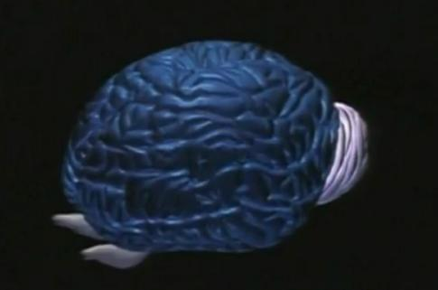

演讲人：亨利.马克拉姆
视频地址：https://open.163.com/movie/2011/7/K/2/M7A12OCLQ_M7A132PK2.html
字幕文本：http://www.iduta.com/tr/970/1/1
这篇演讲和《大脑的研究将改变计算机科学》是一脉相承的，关于大脑理论的介绍。相比而言，此演讲内容比后者要更详细，更加偏重与实际和细节的介绍，而后是对大脑理论整体而论的。二着谈及的大脑理论是同一个。
“ 我们的任务是建立 一个复杂的，可行的人脑计算机模型 ” —— 作者开篇重点强调了研究大脑的目的和任务。十分的明确和清晰。这样说一定程度源自于自信。而自信来自他们的研究团队已经在一小块老鼠大脑上进行了概念验证，并在尝试把规模扩大人脑大小程度。为什么要做扩大规模研究？答案三点：
- 社会生存和进化的需要
- 把所有数据和知识包含进一个模型中
- 攻克精神疾病
同样，引入话题之后，开始讨论大脑的基本问题：大脑如何工作的？作者给出一个理论，他同时指出还有其他理论。这里只探讨一种理论，即：大脑创造并构建了一个宇宙的版本，再像一个气泡一样，投射出这个宇宙的版本到我们周围（this theory is that the brain creates, builds, a version of the universe, and projects this version of the universe, like a bubble, all around us.）这个理论的正确性有待于大脑的仿真和系统严谨问题的解决。
在这个理论中衍射出一个概念：知觉气泡（perceptual bubble）。进一步推广即我们的知觉源自判断；判断维持了知觉气泡。接着作者给出多个论据。比如麻醉药的工作原理是引入干扰噪音到大脑中，导致神经元相互之间无法理论，以至于不能做出判断。再如打开一扇门，99%的所见源自于大脑对房间的推断。因而，“ 我思故我在 “ 但我不能说，“ 你思故你在 ”， 因为你包含在我的知觉气泡中。

大脑有能力建立一个这样的知觉吗？作者从进化角度开始解读。宇宙花费110亿年创造出来大脑皮层，这是宇宙的终极产品（如上图所示）。从一点神经，到额叶，再到大脑皮层，这是最成功的进化。而且这个进化并没有停止，依然在飞快的进化当中。大脑皮层由上百万的小模块组成，充斥着整个头骨，并且通过成列折叠，褶皱的方式最大限度的利用头骨空间，实现更复杂的功能。“ 你可以把大脑皮层想想为 一台巨大的钢琴， 由上百万个琴键的钢琴。 每一个皮层 发出一个音符。 刺激它；大脑就奏出交响乐。 不只是知觉的交响乐， 是你的宇宙，你的现实的交响乐 ”。弹奏这么多琴键的钢琴，奏出复杂交响乐的能力，对于大多数人都不是生来具有的。而是需要很多年练习才能掌握它的弹奏，所以我们把孩子送进了学校。不过，也有少部分人是遗传的。自闭症的 “ 紧张世界 ” 理论指出他们的皮层列是超级列，超有活性和可塑性，他们可以更容易弹奏交响乐。如果某种疾病发生在皮层列中，音符也就关闭了。知觉的交响乐也就跑调了。因此，神经科学的圣杯就是理解皮层的设计。
在过去15年里通过解剖研究大脑皮层的原理，去发现其通信规律和连接规律，建立复杂的三维数字模型。为数万个神经元建立数字模型，可以看到不同种类的神经元缠绕在一起，分叉连接的交织点作为信息传输的突触，构成一个网络，形成大脑的 “ 电路 ” 或者称为大脑编织的结构。那么如何构建这个结构？这个结构的模式是什么？解决这个问题依然是对大脑理论巨大的挑战。为什么这样说呢？作者解释道，每个神经元都是不同的，就像森林中每个树，每片树叶一样，都彼此不相同。我们自己的各不相同，我和你的彼此各不相同。而且也不会有相同的编织结构，不会有相同的 “ 电路 ”。但是经过实验证明，不管你的大脑是大时小，神经元是多还是少，神经元种类形态不同，但是它们具有相同的编织模式。这是物种的特异性。“ 这意味着可以解释，为什么我们不能和别的物种交流 ”，意指物种之间虽然具有类似的大脑，但是由于彼此的神经元不同，不能相互交流。
]

打开了皮层的原理，然后让它活起来。如何活起来呢？当然通过数学公式和运算。比如神经元变成发电机的数学公式；神经元采集信息的数学描述；以及它们通讯的数学描述。通过这些数学公式，使用超级计算机（个人PC足够模拟一个神经元的计算量）仿真大脑皮层的活动。当加载所有神经元并激活它之后，会发现交织的如乱麻一般。即使没有训练这个皮层也可以创建一个特定的现实。不仅好奇一幅画的刺激在大脑皮层里它会存在于哪里？
科学家门通过忽略神经元，突触，看原始的电脉冲活动，因为这就是大脑本身创建的。当这样做之后，会看到幽灵一样的结构，电物体出现在大脑皮层列中。这些电物体包含了所有刺激它的信息。放大看待这个电物体就像整个宇宙。下一步就是提取个电物体坐标投射到知觉空间中（找到它们的映射关系），如果可以做到，那么我们就可以走进大脑创造的现实当中。10年内如果成功，那么下次演讲将是一个全息图。作者进一步大胆预测，宇宙可以进化出能看到自己的大脑，不过这只是个假设，还需要很多工作来验证这个假设。